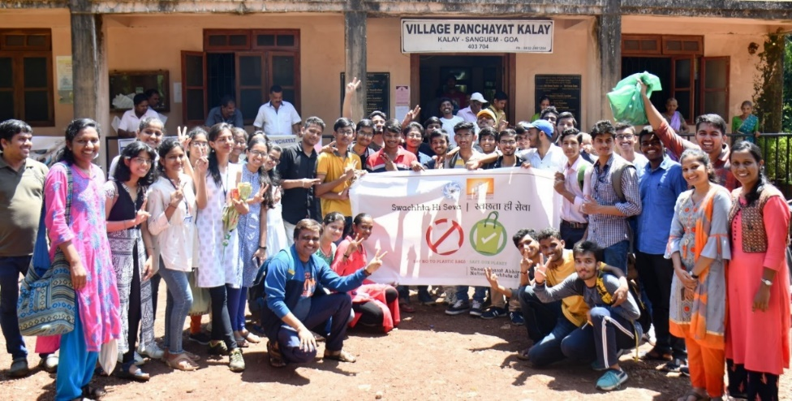
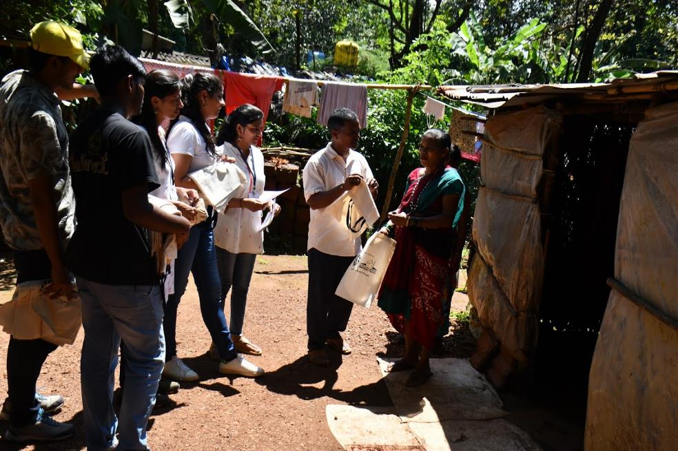
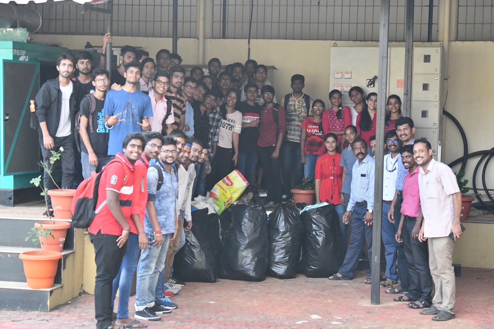
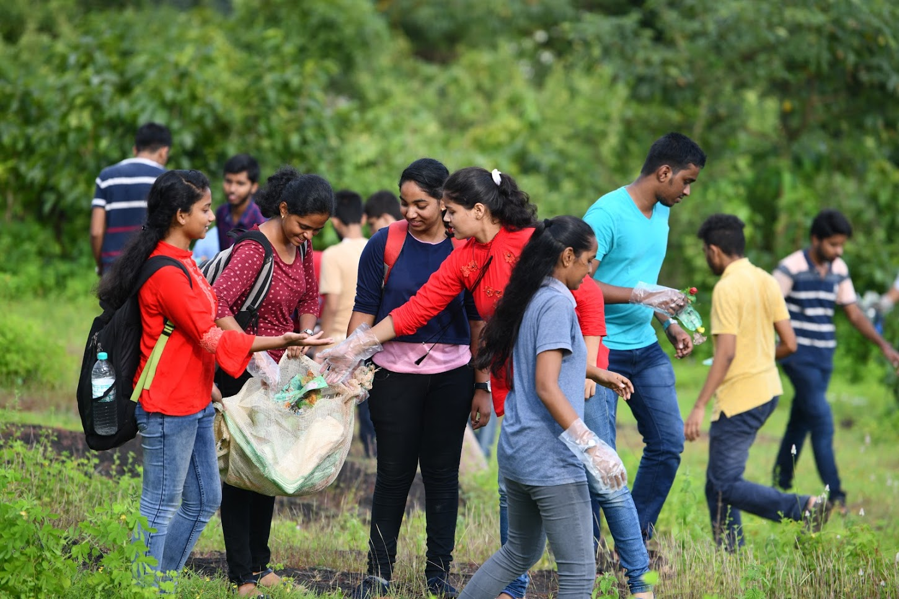
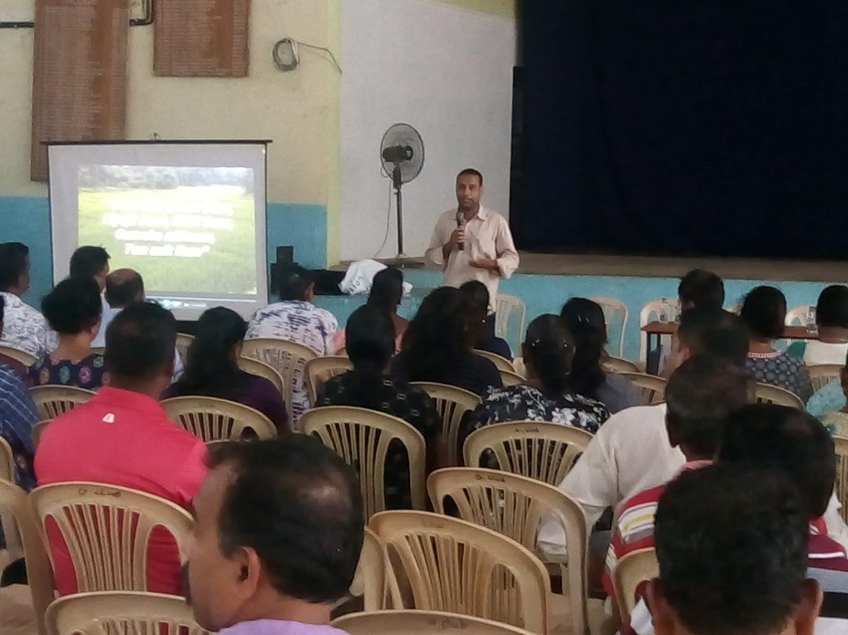
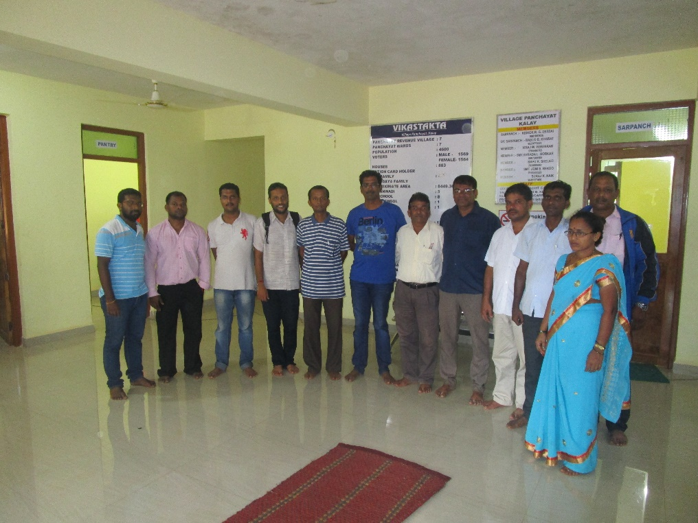
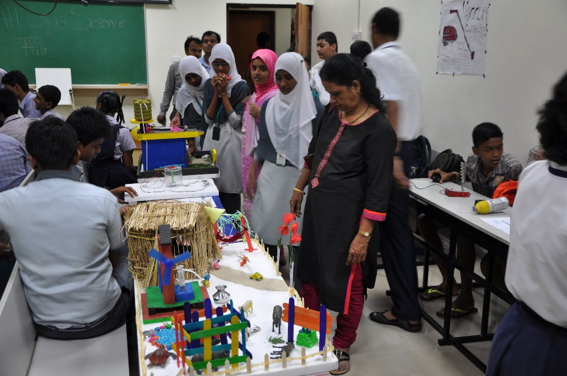

OUTREACH ACTIVITIES
Plastic free village campaign:
The UBA (Unnat Bharat Abhiyaan) cell of NIT Goa has conducted a plastic-free village campaign in the adopted village as part of Swachhata Hi Sewa Campaign. The campaign was funded by the institute and was conducted in Kalay village. A team of 52 members comprising of 9 faculty members, 6 non-teaching staff, and remaining students visited the village and created awareness in the village. Pamphlets and cloth bags were distributed in each household.


Plastic waste Shramdaan:
A massive plastic waste Shramdaan was conducted, where every member of the Institute had collected plastic waste. Besides, a special plastic collection drive was conducted around the institute. The collected waste has been given to the panchayat for recycling.


Guirdolim Gramsabha:
The representatives from Unnat Bharat Abhiyaan cell of NIT Goa attended the Gramsabha in Guirdolim village that was represented by the people of the village and the various officials. All panch members, representatives from various departments including Agriculture; public health; police, Convenor of the Committee for preparation of DPVP, Mr. Savo Antao, representatives from UBA Cell of NIT Goa (2 faculty members), and members of Self Help Groups in the village were present at the Gramsabha.

Gramsabha participation in Kalay Village::
The members of Unnat Bharat Abhiyaan cell of NIT Goa attended the Gramsabha in Kalay village. The Gramsabha was represented by the people of the village and the various officials. All panch members, representatives from 9 departments including Irrigation, Agriculture, Election Commission, Forestry, representatives from UBA Cell of NIT Goa, and members of Self Help Groups in the village were present for the Gramsabha. The major issues faced by the village were identified after the Gramsabha and the House hold survey.

Village level and Household level Survey in Kalay::
The UBA team members from NIT Goa visited Kalay village panchayat. A team of around 80 members comprising of 10 staff members and students participated in the field visit to Kalay village panchayat and did a detailed house hold and village level survey. The village level survey and the house hold survey is uploaded in the UBA portal. The report generated out of the household survey is given to the panchayat members which will be useful for the development of Detailed Village Development Plan.


Understanding Science through Experiments: An Initiative of RAA::
NIT Goa has organised two day workshop on “Understanding Science through Experiments” under Rashtriya Avishkar Abhiyan (RAA), a Govt. of India initiative for school teachers and the students of secondary and higher secondary levels.
Under this initiative, a workshop was conducted, where in Dr. Ajay Mahajan, Dayanand Science College, Latur and Dr. Jitendra Singh, DRDO, Hyderabad, had been invited as experts, who have earlier organised more than 100 of such workshops across India.
About 150 participants across the state attended the workshop, out of which 30 participants were teachers and 120 participants were students between 8th to 11th standards. The workshop has been well appreciated by the students as well as the teachers.

Make A Change::
Make a change is an initiative initiated by the students of NIT Goa as a part of the cultural festival Raag. This initiative is supported by Rashtriya Avishkar Abhiyan and Unnat Bharat Abhiyan. It is also supported by SPIE Student Chapter and Lm10x. Lm10x is an association to inspire students and increase their interest in science and technology. Students of NIT Goa visited the following schools:
1) Government High School Sadar
2) Government High School Porvorim
3) Government High School Kundaim
All Goa Science Fair::
The first All Goa Science Fair was orgainsed for inculating research and innovative qualities into young school minds. Teams consisting of 3 students from grades 8,9 and 10 came up with projects on the topic of the event “Science and technology for a clean and green tomorrow”. A total of 42 teams participated in this fair. Along with the competition, there were college projects that were put up by the students of NIT Goa. These projects were seen with much interest by visiting schools. Earlier that day, the exhibition was inaugurated by, Director of NIT Goa, who spoke to the school children on the importance of research and how it could bring India into a superpower in technology. The event saw a huge turnout and was praised by the teachers and professors.

Teacher Training Programme::
NIT Goa in association with SCERT (State Council of Educational Research and Training, Government of Goa) has organized Teacher Training Programme (TTP) in mathematics and sciences under RAA. It has been conducted as two different programmes with title “Advanced Training in Mathematics” and “Training in Basic Science”. NIT Goa has successfully trained high school teachers of the state through three such workshops in mathematics and three in science.
The training program for mathematics teacher had been conducted in three different phases. Each phase of the programme has been conducted for a duration of five days and about 180 teachers were trained by Faculty of Mathematics, NIT Goa. The course was designed to give concrete base for the topics like, Number theory, Geometry, algebra, introduction to linear algebra, counting and probability, basic calculus, trigonometry, etc. which covers the syllabus of state and central board.
Similar to the mathematics program, the science training program was conducted in three phases. About two hundred teachers were trained in all branches of science which includes chemistry, physics, botany, and zoology.
Teacher Training Programme (5 Days Teachers Training and E-Inaugration of ICT Labs)::
Smt. Mridula Sinha, Hon’ble Governor of Goa, inaugurated a 5 Days Teachers Training Workshop under Rashtriya Avishkar Abhiyan (RAA) program of MHRD, Government of India, organized by National Institute of Technology Goa in collaboration with UNISED, programmed by Samagra Shiksha, Goa. On this auspicious occasion, the Hon’ble Governor also e-inaugurated Information Communication Technology (ICT) labs established in government schools of Goa.
Hon’ble Governor had an interactive session with students of Government Primary Middle School, MAPUSA through the equipments made available to the school as part of ICT lab. Governor complimented the school on getting ICT labs and shared that the students and teachers should make maximum use of ICT Labs. These Labs have been established to promote usage of ICT in government schools of Goa.
A total of 120 teachers and principal/Head masters participated in the event. The teachers will be trained on how make teaching mathematics and basic science more effective and exciting for the school students. The aim is to enable children become more inclined and motivated towards these subjects.
During the programme, Dr. Gopal Mugeraya Director NIT Goa, Smt. Nila Mohanan, Secretary Education Goa, Shr. Nagaraj Honnekeri Director education Goa, Smt. Neetal Amonkar, State Project Director Samagra Shiksha Goa, State Education department officials, Dr. Saidi Reddy Parne, Nodal Officer RAA, Shr. Avaneesh Tripathi, National programme advisor RAA, Dr Sandeep Shahi National Convener NASB and Javed Ali Khan Programme Director UNISED were present.